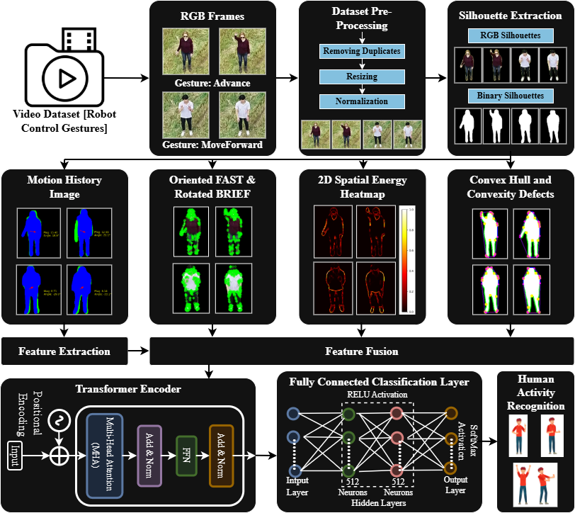

Human action recognition from an aerial view remains a challenging task due to unstable drone motion, varying viewpoints, small target sizes, and low-resolution imagery. These challenges become more relevant in drone-based surveillance systems where accurate and real-time activity recognition has significant implications for public safety and crowd monitoring. In this work, we introduce a robust human action recognition framework for real aerial drone footage.
Our strategy begins with silhouette extraction, generating Motion History Images to capture temporal motion information. We track inter-frame movements by using ORB keypoint detection followed by Brute Force Matching. Geometric descriptors, including convex hulls and convexity defects, together with spatial energy-based features, represent the motion and shape characteristics. We fuse combined features into one vector and feed it to a Transformer-based classifier to classify in a temporally aware manner. The proposed approach achieves an accuracy of 88.7% on the real aerial subset of the RoCoG-v2 dataset.

The proposed system, ConvexFormer, is a robust Convex Hull-driven spatiotemporal feature fusion framework for transformer-based drone action recognition. RGB frames undergo preprocessing, followed by silhouette extraction to isolate the human subject. ORB is used to extract local motion features, while shape characteristics are captured using convex hull and convexity defects. Spatial activity regions are emphasized through 2D spatial energy heatmaps, and temporal dynamics are encoded using Motion History Images (MHI). These multimodal features are fused to enable accurate human action recognition using a transformer-based model, as illustrated in Fig.
| Class | Advance | Attention | FollowMe | Halt | Move Forward | Move-In Reverse | Rally |
|---|---|---|---|---|---|---|---|
| Advance | 0.74 | 0.04 | 0.02 | 0.07 | 0.06 | 0.00 | 0.07 |
| Attention | 0.07 | 0.68 | 0.05 | 0.02 | 0.00 | 0.09 | 0.07 |
| FollowMe | 0.02 | 0.09 | 0.63 | 0.11 | 0.04 | 0.09 | 0.02 |
| Halt | 0.00 | 0.04 | 0.02 | 0.89 | 0.02 | 0.02 | 0.01 |
| Move Forward | 0.04 | 0.04 | 0.04 | 0.00 | 0.84 | 0.01 | 0.04 |
| Move-In Reverse | 0.004 | 0.007 | 0.007 | 0.007 | 0.004 | 0.96 | 0.012 |
| Rally | 0.02 | 0.01 | 0.01 | 0.01 | 0.01 | 0.01 | 0.94 |
| Class | Precision | Recall | F1-Score |
|---|---|---|---|
| Advance | 0.86 | 0.74 | 0.80 |
| Attention | 0.55 | 0.68 | 0.61 |
| FollowMe | 0.66 | 0.63 | 0.64 |
| Halt | 0.89 | 0.89 | 0.89 |
| MoveForward | 0.77 | 0.84 | 0.81 |
| MoveInReverse | 0.95 | 0.96 | 0.96 |
| Rally | 0.94 | 0.94 | 0.94 |
| Dataset | Method | Accuracy (%) |
|---|---|---|
| RoCoG-v2 (Real Aerial) | Pulakurthi et al. [85] | 75 |
| Shah et al. | 89 | |
| Xian et al. | 86.7 | |
| Zhu et al. | 80.22 | |
| Reddy et al. | 87 | |
| Proposed Method | 88.7 |
This study utilized the real aerial subset of the RoCoG-v2 dataset, which includes 178 video samples capturing 7 key activities performed by 10 individuals in outdoor settings.
Shahid, Harris, Shaheryar Najam, and Ahmad Jalal. "Drone Surveillance for Action Recognition via Mask R-CNN and Transformer learning." In 2025 27th International Multitopic Conference (INMIC), pp. 1-6. IEEE, 2025.
For questions about this work, please contact:
harrisshahid.m@gmail.com